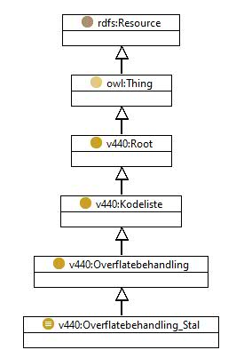

http://rdf.vegdata.no/V440/v440-owl#Overflatebehandling_Stal
Class Overflatebehandling_Stal

v440:avsnitt
V-8.7
v440:kapitel
V-8
v440:kode
-
rdf:type
owl:Class
rdfs:label
Overflatebehandling stål
rdfs:subClassOf
v440:Overflatebehandling
Instances
v440:Overflatebehandling_Stal_Annen_overflatebehandling
,
v440:Overflatebehandling_Stal_CMP_sinkp_spesifikasjon_nr_107-110_ikke_anbefalt
,
v440:Overflatebehandling_Stal_Epoxy_mastik_polyuretan-system
,
v440:Overflatebehandling_Stal_Etsprimer_spesifikasjon_nr_107-110
,
v440:Overflatebehandling_Stal_Etsprimer_spesifikasjon_nr_115-118
,
v440:Overflatebehandling_Stal_Ingen
,
v440:Overflatebehandling_Stal_Maling_div_typer
,
v440:Overflatebehandling_Stal_Metalcoat
,
v440:Overflatebehandling_Stal_Metallisering_epoxy_mastik_polyuretan
,
v440:Overflatebehandling_Stal_Spesifikasjon_nr_107-110_Alkyd
,
v440:Overflatebehandling_Stal_Spesifikasjon_nr_107-110_annet
,
v440:Overflatebehandling_Stal_Spesifikasjon_nr_115-118_Alkyd_Klorkautsjuk
,
v440:Overflatebehandling_Stal_Spesifikasjon_nr_115-118_annet
,
v440:Overflatebehandling_Stal_System_1_Varmspr_aluminium_etsprimer_spesifikasjon_nr_115-118
,
v440:Overflatebehandling_Stal_System_1_Varmspr_sink_etsprimer_spesifikasjon_nr_115-118
,
v440:Overflatebehandling_Stal_System_2_Varmspr_Aluminiun_etsprimer_spesifikasjon_nr_107-110
,
v440:Overflatebehandling_Stal_System_2_Varmspr_sink_etsprimer_spesifikasjon_nr_107-110
,
v440:Overflatebehandling_Stal_System_3_Varmspr_aluminium_epoxy_polyuretan
,
v440:Overflatebehandling_Stal_System_3_Varmspr_aluminium_epoxy_polyuretan-akryl
,
v440:Overflatebehandling_Stal_System_3_Varmspr_sink_epoxy_polyuretan
,
v440:Overflatebehandling_Stal_System_3_Varmspr_sink_epoxy_polyuretan-akryl
,
v440:Overflatebehandling_Stal_System_4_CMP_sinkpulvermaling_spesifikasjon_nr_115-118
,
v440:Overflatebehandling_Stal_System_5_Sinkprimer_epoxy_polyuretan
,
v440:Overflatebehandling_Stal_System_5_Sinkprimer_epoxy_polyuretan-akryl
,
v440:Overflatebehandling_Stal_Ukjent
,
v440:Overflatebehandling_Stal_Varmforsinking
Generated with
TopBraid Composer
by
TopQuadrant, Inc.